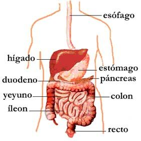

GRACIAS POR VISITARME:
te damos una cordial bienvenida a la segunda unidad de Biologia: PROCESO Att: 4 alumnos del 4° A
Nutrición
NUTRICIÓN DE LOS SERES VIVOS
Los alimentos son las sustancias que ingieren los seres vivos. Están formados por componentes inorgánicos (agua, minerales, sales) y por componentes orgánicos (hidratos de carbono o azúcares, lípidos o grasas, proteínas y vitaminas). Todos estos componentes se denominan nutrientes.
La nutrición es el conjunto de procesos donde los seres vivos intercambian materia y energía con el medio que los rodea. Por medio de la nutrición se obtiene energía y se aportan los nutrientes para crear o regenerar la materia del organismo.
La función de nutrición incluye varios procesos: la captación de nutrientes, su transformación, su distribución a todas las células y la eliminación de sustancias de desecho que se producen como resultado del uso que se hace de los nutrientes en las células. Todos estos procesos son comunes tanto para animales como para vegetales. Para que se pueda llevar a cabo la nutrición, los seres vivos poseen órganos y sistemas especializados. En los animales, esos órganos forman parte de los sistemas digestivo, respiratorio, cardiovascular y excretor.
De acuerdo a la forma en que obtienen los alimentos, los seres vivos se clasifican en autótrofos y heterótrofos. Son autótrofos los organismos capaces de sintetizar su propia materia orgánica. Es la nutrición propia de las plantas, que utilizan la energía solar y la clorofila presente en los cloroplastos.
Los organismos heterótrofos no sintetizan sus alimentos, con lo cual es la nutrición propia de los seres que consumen a otros organismos vivos.
La nutrición consiste en tomar nutrientes y oxígeno del medio para obtener energía, para luego recoger y expulsar sustancias de desecho. Se realiza en las siguientes fases: toma de alimentos, transformación de esos alimentos mediante la digestión, absorción de nutrientes, transporte de nutrientes y obtención de energía. Como último paso de la nutrición se realiza la recolección, el transporte y la eliminación de sustancias de desecho producidas en las células.
NUTRICIÓN DE LOS VEGETALES
Las algas y los vegetales se nutren de forma autótrofa. Para ello toman del medio el agua, el dióxido de carbono y las sales minerales. Por medio de las raíces toman el agua y las sales minerales del suelo y por los estomas de las hojas el dióxido de carbono de la atmósfera. Por el tallo se distribuye hacia las hojas el agua y las sales, y hacia todas las partes del vegetal los productos sintetizados en la fotosíntesis. Por lo tanto la raíz,
además de fijar el vegetal al suelo absorbe el agua y las sales por unos pelos muy finos que existen en la zona pilífera. Esa agua y sales forman la savia bruta que se transporta por vasos llamados xilema a través de todo el tallo. La fuerza necesaria para que la savia bruta pueda ascender no es otra que la evaporación del agua de las hojas por transpiración.
Una vez que han llegado el agua y las sustancias inorgánicas a la hoja, se absorbe por los estomas de las propias hojas el dióxido de carbono, que junto con la energía del sol y en presencia de clorofila transforman dentro de los cloroplastos la savia bruta en savia elaborada. Esta savia elaborada, rica en azúcares y materia orgánica, es distribuida al resto del vegetal por otro tipo de vasos denominados floema.
Una vez que el vegetal ha adquirido la materia orgánica por fotosíntesis, la utiliza para generar energía. Los vegetales también necesitan de energía para crecer, dar flores y frutos, reponer partes de la planta y relacionarse con el medio. Esa energía la toman del uso que hacen de los azúcares y demás compuestos elaborados en la fotosíntesis. La materia orgánica entra en las mitocondrias de las células y en presencia de oxígeno se realiza la respiración celular. De esta forma, la materia orgánica es transformada en dióxido de carbono (que se elimina a la atmósfera), agua y energía en forma de ATP (trifosfato de adenosina).
Cabe señalar que los vegetales carecen de estructuras especializadas para la excreción de desechos. Por otra parte, la cantidad de desechos vegetales es muy baja. El dióxido de carbono producido por respiración celular se elimina al exterior a través de los estomas de las hojas, aunque una parte de ese gas puede ser reutilizado para la fotosíntesis. Las sustancias nitrogenadas de desecho se emplean para la síntesis de nuevas proteínas. Algunos desechos son almacenados dentro de las células de la propia planta.
NUTRICIÓN DE LOS ANIMALES
Los animales necesitan energía para vivir, pero no pueden tomarla del sol directamente como lo hacen los vegetales. Sólo pueden obtener la energía de la transformación de los alimentos y del oxígeno que toman del aire. Así se realiza la nutrición heterótrofa. Los seres unicelulares toman del medio externo las sustancias que necesitan. En los seres pluricelulares existen células que se especializan en tejidos, éstos se asocian en órganos y los órganos a su vez en sistemas que realizan funciones específicas dentro del organismo general.
Los sistemas que intervienen en la nutrición de los animales son los siguientes:
1-
Sistema digestivo:
digiere los alimentos para obtener nutrientes, los absorbe para que sean utilizados por las células y elimina la materia no aprovechable en forma de excrementos.
2-
Sistema circulatorio:
distribuye nutrientes y oxígeno a todas las células del cuerpo y recoge los residuos y el dióxido de carbono llevándolo a los órganos excretores.
3-
Sistema respiratorio:
toma el oxígeno necesario para la vida celular y expulsa el dióxido de carbono que produjo la célula tras realizar la respiración celular.
4-
Sistema excretor:
elimina del organismo todas las sustancias nitrogenadas que produce la célula a raíz de su metabolismo.
SISTEMA DIGESTIVO
Es el encargado de transformar los alimentos que ingresan al organismo (ingestión) en sustancias más sencillas (digestión) para que puedan pasar a la sangre (absorción) y de ahí ser distribuidas a todas las células del organismo, desechando todo aquello que no ha sido utilizado (egestión). Vale decir que las etapas que cumple el proceso digestivo son la ingestión, digestión, absorción y egestión. La egestión se produce por defecación, cuando los excrementos son compactos y poseen poco agua (mamíferos) o por deyección, cuando son acuosas y se eliminan por la cloaca (aves).
La mayor parte de los animales tienen un aparato digestivo formado por:
-Un tubo digestivo
con una abertura anterior (cavidad bucal) para entrada de alimentos y una salida posterior (ano) para la expulsión de excrementos. Los órganos principales que forman la parte tubular del sistema digestivo son: cavidad bucal, faringe, esófago, estómago, intestino delgado, intestino grueso, recto y ano.
-Glándulas accesorias
que colaboran en los procesos digestivos y de absorción, como las glándulas salivales, el hígado, el páncreas y el hepatopáncreas, este último en organismos invertebrados.
La digestión fragmenta y reduce a los alimentos de dos formas:
-Física:
a través de la masticación en la cavidad bucal y por los movimientos que realiza el estómago y los intestinos cuando las sustancias ingeridas llegan a estos órganos.
-Química:
por la acción de enzimas digestivas producidas a lo largo del tracto digestivo.
Sistema digestivo en los mamíferos
Los órganos que poseen los mamíferos son los siguientes.
Cavidad bucal:
contiene órganos accesorios como la lengua y los dientes. La lengua colabora en acomodar los alimentos y mezclarlos con saliva durante la masticación (insalivación), con lo cual forman el bolo alimenticio. Los dientes actúan en la digestión mecánica, ya que se utilizan para cortar, desgarrar, triturar y moler los alimentos. La saliva contiene una enzima llamada ptialina que actúa sobre los hidratos de carbono, poniendo en marcha la digestión química. Por otra parte, ejerce una función mecánica al lubricar la boca y humedecer el alimento que ingresa a la cavidad bucal.
Faringe:
una vez que el bocado es deglutido, pasa hacia la faringe (garganta). En los animales superiores, por este órgano pasan los alimentos y el aire que va desde y hacia los pulmones, por lo que es un órgano que pertenece a los sistemas digestivo y respiratorio.
Esófago:
es un conducto que nace en la faringe y conduce el bolo alimenticio hacia el estómago.
Estómago:
en los mamíferos es el lugar donde se inicia la digestión de las proteínas, gracias a la acción del ácido clorhídrico y de las enzimas provenientes del jugo gástrico.

Intestino delgado:
continúa la digestión de las proteínas y se inicia la digestión de las grasas y de los hidratos de carbono, por acción de enzimas del jugo pancreático, del jugo intestinal y de la bilis segregada por el hígado. En el intestino delgado se produce la absorción de la mayor cantidad de nutrientes a través de las vellosidades intestinales. Esos nutrientes pasan a los capilares sanguíneos y linfáticos y se dirigen al hígado, para luego distribuirse a todas las células del organismo.
Intestino grueso:
su principal función es concentrar y almacenar los desechos sólidos y transformar el contenido intestinal (quimo) en materia fecal. Las células presentes en intestino grueso reabsorben agua del quimo, sales minerales y algunas vitaminas.
Recto:
última porción del sistema digestivo, ubicado entre el intestino grueso y el ano. La función del recto es almacenar la materia fecal para luego ser expulsada por la abertura anal.
¿CUAL ES TU NOMBRE?
¿QUE TAL TE PARECE ESTA PAGINA?:
BUENA
MUY BUENA
EXELENTE
ENVIANOS TU COMENTARIO
Busca mas infotmacion en:
La guia
OBTEN MAS INFORMACION
LIBROS
Biología marina
Biología molecular
Botánica
Ecología
Ecologismo y lifestyle
Estudios y ensayos
Microbiología
Guías de especies
Si te pierdes en los juegos, la vida pasara sin que te des cuenta
Agradecemos a:
CIENCIAS BIOLOGICAS y Educación para la Salud
por la informacion
Si te gusto la pagina, contactanos
Cesar Gonzalez
Andy Martinez
Nenita Gomez
Isidro Molina
.jpg)
 Busca mas infotmacion en: La guia
Busca mas infotmacion en: La guia

.jpg)